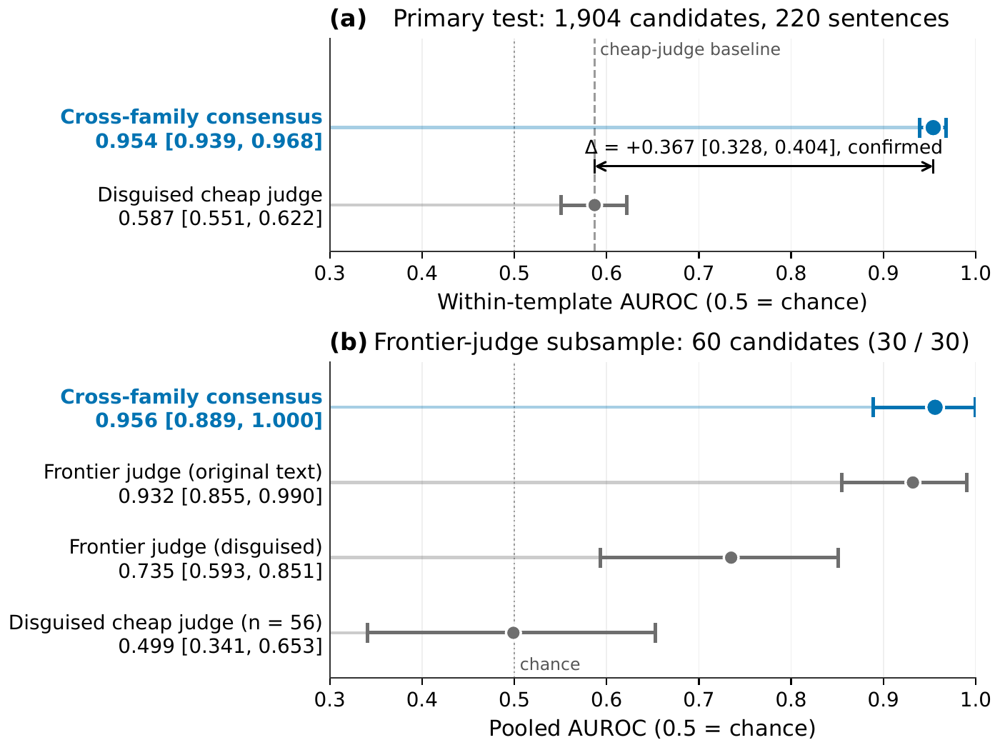
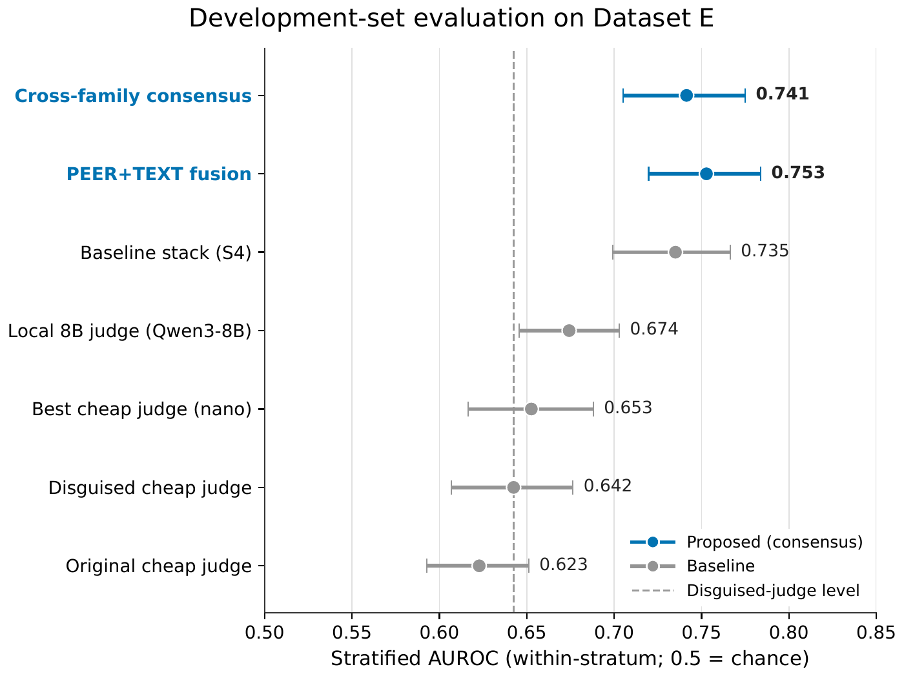
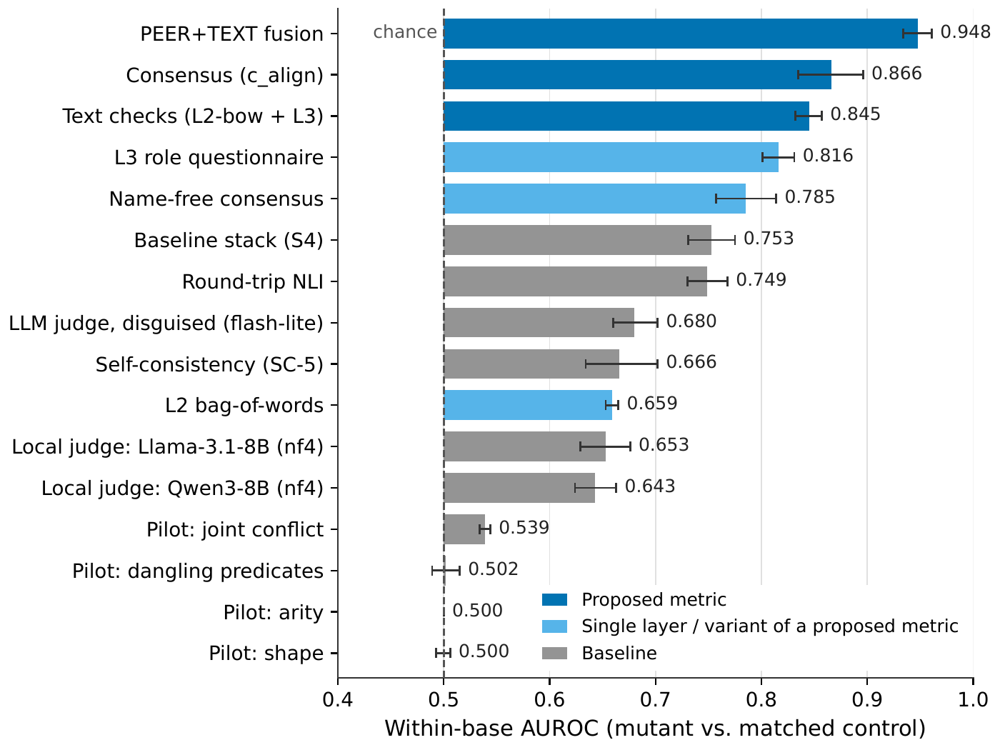
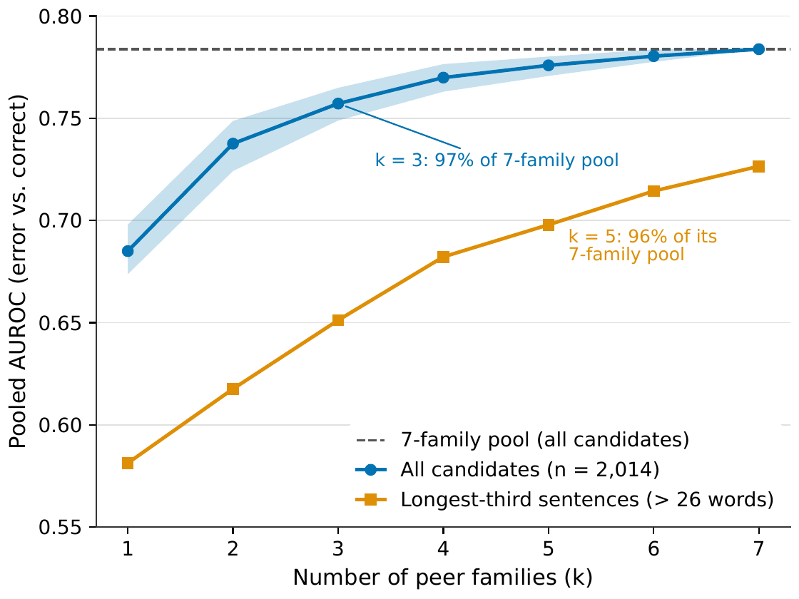

Cross-Family Solver Consensus as a Gold-Free Faithfulness Metric for Natural-Language-to-Logic Translation
When multiple independent LLM families translate the same sentence into first-order logic, their translations tend to agree when correct and scatter when wrong. Scoring a candidate by how many peers disagree with it, via Z3 equivalence after vocabulary alignment, yields a gold-free faithfulness metric. On a pre-registered test of 220 long sentences with shared symbol vocabulary, this cross-family consensus achieves within-template AUROC 0.954, compared to 0.587 for the best cheap LLM judge: a confirmed advantage of +0.367.
Contributions
A gold-free faithfulness metric
Cross-family solver consensus scores each candidate FOL formula by the fraction of independent LLM families whose translations are not Z3-equivalent to it. On 220 templated long sentences with shared symbols, it reaches within-template AUROC 0.954 versus 0.587 for the best cheap LLM judge: a confirmed +0.367 advantage. [code]
Development-set validation
On a broader evaluation of 2,686 candidates across 292 sentences and nine generator families, consensus achieves stratified AUROC 0.741 versus 0.642 for the judge, a development-set advantage of +0.099. [code]
Large-scale meta-evaluation data
Two labelled meta-evaluation sets: a development set of 8,507 real candidates from nine LLM families on 700 sentences, and a perturbation suite of 4,234 typed mutants plus 868 meaning-preserving controls for per-error-type sensitivity analysis. [code]
Method
The metric takes a sentence and a candidate FOL formula and returns a score predicting whether the formula is faithful to the text, without requiring a gold reference or ontology.
- Peer generation. Collect translations of the same sentence from k independent LLM families (different pre-training data, different organisations), each at temperature 0 with a standardised few-shot prompt. In the experiments, nine families from six organisations are used: GPT-4, GPT-3.5, Llama-3.3-70B, Qwen3-235B, DeepSeek-V3.1, Mistral-Small-3.2, Gemini-2.5-Flash-Lite, GPT-4.1-Mini, and the three Logic-LM released systems.
- Pairwise equivalence. For each peer translation, check Z3 equivalence to the candidate modulo vocabulary alignment. The aligner maps predicate names by normalised Levenshtein distance on lowercased names with matching arity, then checks Z3 equivalence under the best injective mapping.
- Consensus score. Score the candidate as c_score = 1 − (fraction of peers that are Z3-equivalent to it). Higher scores predict error: a candidate that no peer reproduces is likely wrong, while one that most peers agree with is likely faithful. The candidate is excluded from its own pool.
The graded (continuous) consensus score outperforms binary majority voting by +0.114 stratified AUROC on the development set, because both error endorsement (e = 0.124) and correct-candidate divergence (d = 0.537) are far enough from zero that partial agreement carries discriminative information a binary threshold discards.
A fused metric (PEER+TEXT) combines the consensus signal with two text-only features: a bag-of-words coverage score measuring overlap between text content words and formula predicates, and a role-questionnaire score in which a small LLM answers structured questions about the sentence while Z3 extracts the formula's role profile. [FOL-Triage code] [Consensus code]
Results
Main result: shared-vocabulary long sentences
On R_COMP SIG (1,904 candidates from 220 sentences, 395 ERROR, 1,509 CORRECT), consensus achieves within-template AUROC 0.954 [0.939, 0.968] versus the disguised judge at 0.587 [0.551, 0.622], a confirmed delta of +0.367 [0.328, 0.404]. Pre-registered and confirmed on a test set independent of all development. [code]
The judge adds nothing over consensus in this condition: the nested gain of adding the judge to consensus is approximately zero, while adding consensus to the judge yields +0.377.
Development-set evaluation (Dataset E)
| Metric | Strat. AUROC | Pooled AUROC | 95% CI (strat.) |
|---|---|---|---|
| PEER+TEXT fusion | 0.753 | 0.790 | [0.714, 0.788] |
| Cross-family consensus | 0.741 | 0.782 | [0.708, 0.773] |
| Baseline stack (S4) | 0.704 | 0.759 | |
| Local 8B judge (disg.) | 0.669 | 0.712 | |
| Best cheap judge (nano) | 0.652 | ||
| Disguised cheap judge | 0.642 | 0.696 | [0.598, 0.687] |
| Original cheap judge | 0.623 | 0.635 | [0.575, 0.670] |
Dataset E: 2,686 candidates, 1,822 ERROR / 864 CORRECT, 292 sentences. CIs are 95% sentence-clustered bootstrap intervals. [code]
Consensus outperforms the disguised cheap judge by +0.099 [0.049, 0.146] (pre-registered criterion met). On long sentences (L25+L20+EXC, 2,300 items), the advantage widens to +0.116 [0.070, 0.163]. On the tier-A subset with fully trusted gold (449 items), the advantage reaches +0.299 [0.212, 0.390].
Adding consensus to the full baseline stack of 28 features yields +0.039 [0.021, 0.057] stratified AUROC (permutation-null 95th percentile: 0.009). Consensus alone approximately equals the full baseline stack. On a 284-row frontier-judge subsample, consensus achieves 0.957 of the frontier judge's AUROC at 30x lower cost per item ($0.00012 vs $0.00365).
Perturbation sensitivity
On a suite of 4,234 typed mutants + 868 controls with a within-base design, consensus achieves within-base AUROC 0.866, compared to 0.680 for the disguised judge, 0.666 for self-consistency, and ~0.50 for structural pilot metrics. The PEER+TEXT fusion reaches 0.948. [code]
How many peer families are needed?
Discriminative power saturates rapidly. On 2,014 items from Dataset E with all seven non-candidate families, pooled AUROC rises from 0.685 (one family) through 0.757 (three families) to 0.784 (seven families). Three families capture 97% of the full pool's AUROC. No single family carries the signal: the maximum leave-one-family-out drop is 0.005. [code]
Negative results
Structural pilot metrics (joint conflict, arity inconsistency, shape inconsistency, dangling predicates) achieve AUROC 0.500 to 0.533, indistinguishable from chance. Formula lint (deterministic formula-smell detection) achieves AUROC 0.508 on LLM outputs. Round-trip reformalisation achieves AUROC 0.513 (76% of items produce tied scores). Candidate-signature consensus (giving peers the candidate's own symbol list) lowers divergence (d = 0.139 vs 0.323 for free peers) but raises error endorsement (e = 0.459 vs 0.173), producing net AUROC 0.614. [baselines code] [CSC code]
Figures




Limitations
- Vocabulary dependence. Candidates that use different predicate names than their peers are penalised regardless of correctness. The nonce-rename false-alarm rate is 0.76. Three vocabulary-robust approaches were tested (name-free alignment, hybrid matching, gloss-gated checking); all reduce correct-candidate divergence but proportionally increase error endorsement, producing no net AUROC gain. The gloss-gated checker failed its development gate (AUROC 0.696 vs 0.742 for plain alignment). This tradeoff between divergence and endorsement appears structural when vocabulary is unconstrained.
- Error endorsement. On Dataset E, 38% of errors are endorsed by the majority. The endorsed-error rate is higher for structural errors (57%) than for polarity errors (5%). The PEER+TEXT fusion does not significantly outperform consensus alone (stratified delta +0.011, not significant).
- Incomplete confirmations. Confirmation was attempted on three fronts (a fresh 550-sentence test set, a second long-sentence sample, and R_COMP under free vocabulary). All three were budget-stopped before reaching testability. The only confirmed result on an independent test set is the shared-vocabulary long-sentence test. The Dataset E result met its pre-registered criterion but is a development-set estimate.
- Short-sentence weakness. The consensus advantage over the judge does not hold on short FOLIO-style sentences (CTRL stratum on Dataset E: −0.069 [−0.23, 0.10]). The method is strongest on long, conditioned sentences where judges struggle with logical complexity.
- Domain scope. All evaluation is on FOLIO and MALLS-derived data. Domain transfer is untested.